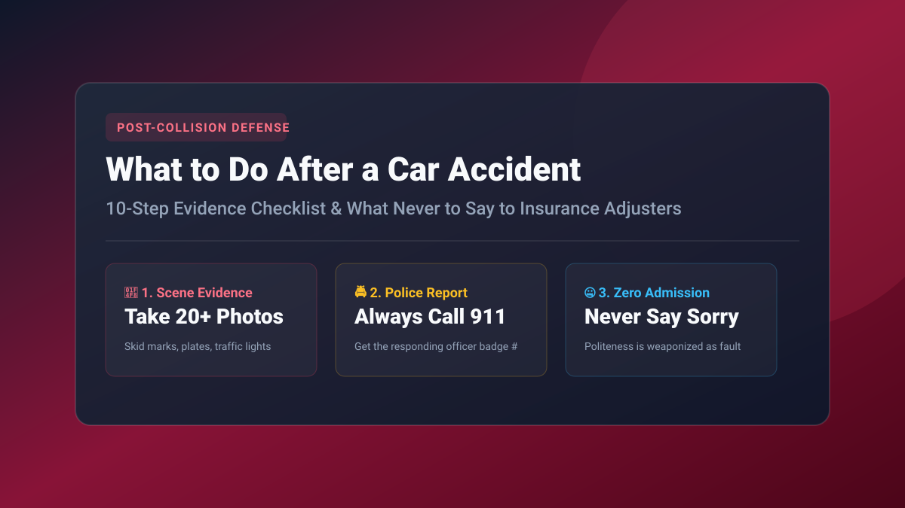

Key Takeaways at a Glance
- Adrenaline Distorts Judgment: The moments immediately following a collision are filled with shock and adrenaline. Having a memorized step-by-step checklist prevents costly errors.
- Never Apologize at the Scene: Saying "I'm so sorry, I didn't see you" is natural human politeness, but insurance adjusters and defense lawyers will weaponize it as a legal admission of guilt.
- Always Call the Police: Even for seemingly minor fender benders, a formal Police Incident Report provides unbiased documentation of driver statements and skid marks.
- Photograph Everything: Take 20+ photos capturing vehicle damage, wide-angle intersection views, traffic control lights, skid marks, license plates, and driver IDs.

1. The Golden Ten Minutes: Scene Safety & Prioritization
A vehicular collision happens in a split second, but the actions you take over the subsequent 30 minutes dictate whether your insurance claim is paid in full or wrongfully denied. Adrenaline, elevated heart rates, and shock frequently cause drivers to say things they regret or fail to document critical physical evidence.
Your first priority is always physical safety. Check yourself and passengers for injuries. If anyone is bleeding, disoriented, or reporting neck or back pain, call 911 immediately and do not move injured parties unless there is an imminent fire hazard.
If the vehicles are operable and on an active high-speed freeway lane, state "Steer It and Clear It" laws instruct you to move vehicles to the shoulder to prevent secondary multi-vehicle collisions. Turn on hazard flashers immediately.
2. The 10-Step Car Accident Survival Checklist
1. Call 911 for Police & Medical Assistance: Always request police dispatch. If the other driver begs you not to call the police ("let's just handle this between us with cash"), refuse politely. Drivers who plead to avoid police often carry expired insurance, suspended licenses, or warrant citations.
2. Never Apologize or Discuss Fault: Avoid saying "I'm sorry," "I didn't see you," or "I was looking at my GPS." In civil liability investigations, politeness is routinely documented by the opposing insurer as an admission of fault.
3. Take 20+ High-Resolution Scene Photographs: Before vehicles are moved, photograph: vehicle impact angles, both license plates, skid marks on the asphalt, broken glass debris fields, deployed airbags, traffic light signals, street sign names, and weather conditions.
4. Exchange Mandatory Information: Photograph the other driver’s driver's license, auto insurance declarations card, and vehicle registration card. Note their phone number and residential address.
5. Identify & Interview Independent Eyewitnesses: Bystanders, pedestrians, and motorists who pulled over are goldmines for liability disputes. Approach them calmly: "Did you see what happened? Could I get your name and phone number for the police report?"
6. Obtain the Police Incident Report Number: Ask the responding officer for their name, badge number, and the official Police Report incident number. The written report is typically available within 5 to 10 business days.
7. Seek Medical Evaluation Within 72 Hours: Even if you feel fine, adrenaline masks soft-tissue whiplash, micro-concussions, and internal lumbar tears. In no-fault PIP states (like Florida), you MUST seek medical evaluation within 14 days or you forfeit your $10,000 in personal injury benefits!
8. Notify Your Own Insurance Carrier: Report the accident to your own insurer within 24 hours. Stick strictly to verified physical facts: date, time, location, other driver’s name, and police report number.
9. Decline Recorded Statements to the Opposing Adjuster: The other driver’s insurance adjuster will call you within 48 hours asking for a "friendly recorded statement." Politely decline: "I am not providing a recorded statement until my medical evaluation is finalized."
10. Track Every Single Expense: Create a dedicated folder for towing receipts, rental car invoices, pharmacy co-pays, mileage driven to physical therapy, and lost work wages.
3. What NOT to Say vs. What to Say to Insurance Adjusters
Insurance adjusters are trained interrogators whose goal is to minimize claim payouts:
| What You Might Instinctively Say (DANGEROUS) | What You Should Actually Say (SAFE) | Why It Matters |
|---|---|---|
| "I'm so sorry, I was distracted." | "The other vehicle struck my front passenger quarter panel." | Never admit distraction or fault. |
| "I'm completely fine, no injuries at all." | "I am experiencing soreness and am seeking medical evaluation." | Soft-tissue whiplash symptoms emerge 48 hours later. |
| "I think I was driving around 45 mph." | "I was traveling with the legal flow of traffic." | Guessing speeds is weaponized to prove speeding. |
| "Sure, you can record this phone call." | "I do not consent to recorded statements at this time." | Recorded calls are edited to find inconsistencies. |
4. Beware the "Predatory Towing" & Storage Fee Trap
If your vehicle cannot be driven from the scene, do not let uninvited "bandit tow trucks" tow your car to an unvetted private storage yard. Private impound yards frequently charge $250/day in storage fees plus exorbitant gate fees. Instruct the tow driver to tow your vehicle directly to your primary residence or an insurance-approved DRP collision center.
Compare Verified Rates in Your State
Benchmark rate filings from Progressive, State Farm, GEICO, Allstate, and Travelers with zero obligation.
Frequently Asked Questions
Q: Should I file the claim with my own insurance or the other driver’s insurance?
If fault is 100% clear (e.g. you were rear-ended at a red light), filing directly with the at-fault carrier avoids paying your collision deductible. However, if fault is disputed or repairs are delayed, filing through your own collision coverage gets your car fixed immediately; your insurer will subrogate to recover your deductible.
Q: Do I have to accept the insurance company’s first settlement offer for my totaled car?
No! The first total-loss valuation offer is almost always an opening bid. Review their valuation report (CCC ONE or Mitchell), look for omitted vehicle options and low-mileage adjustments, and provide local dealer comparable listings to negotiate a higher payout.
Q: Can an insurance company force me to use their preferred body shop?
No. Under anti-steering laws in all 50 states, you have the legal right to choose any licensed auto body shop to repair your vehicle.
Related Authority Insurance Guides
Gap Insurance Explained: When Is It Worth It?
Learn how gap insurance covers vehicle loan depreciation deficits for $30/year.
Limits BaselineHow Much Car Insurance Do I Actually Need?
Why state minimums put your savings at risk and why 100/300/100 is baseline.
Bundling SecretsHome & Auto Bundling: Save 25% on Premiums
Compare multi-line discount tiers across State Farm, Allstate, and Progressive.